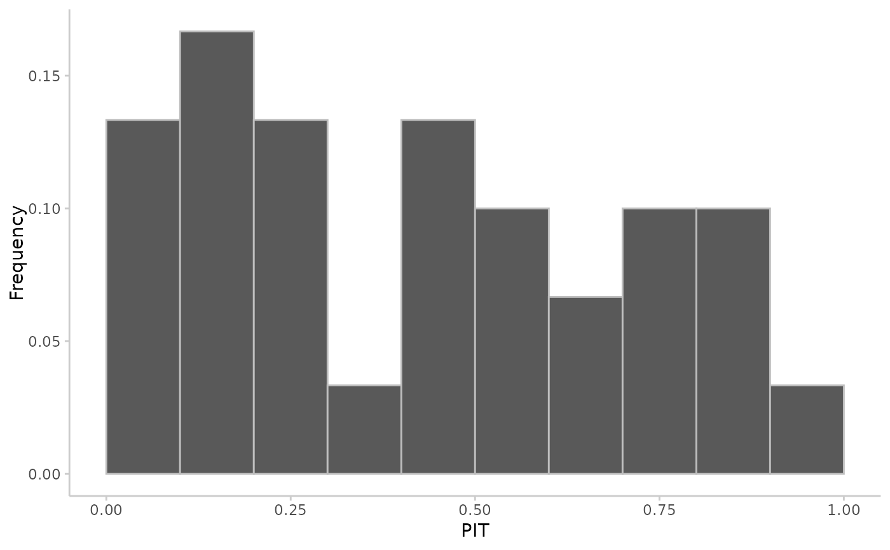
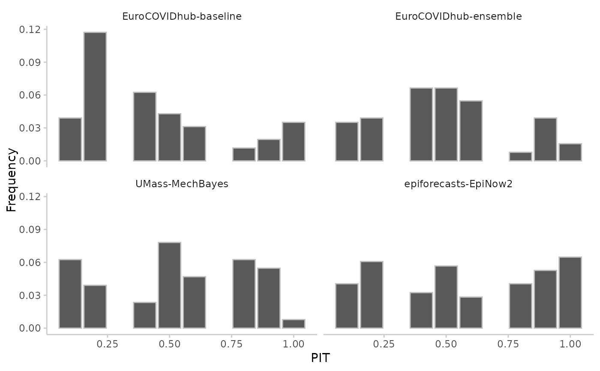
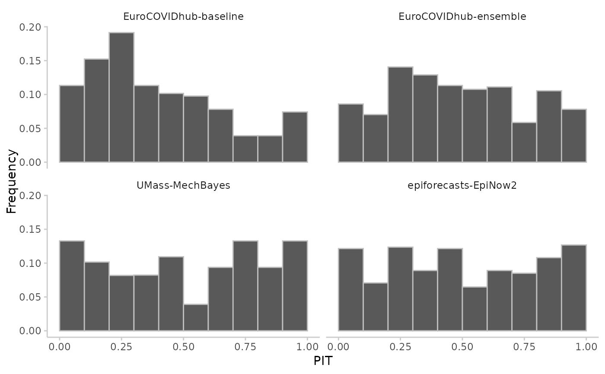

Make a simple histogram of the probability integral transformed values to visually check whether a uniform distribution seems likely.
Arguments
- pit
Either a vector with the PIT values, or a data.table as produced by
get_pit().- num_bins
The number of bins in the PIT histogram, default is "auto". When
num_bins == "auto",plot_pit()will either display 10 bins, or it will display a bin for each available quantile in case you passed in data in a quantile-based format. You can control the number of bins by supplying a number. This is fine for sample-based pit histograms, but may fail for quantile-based formats. In this case it is preferred to supply explicit breaks points using thebreaksargument.- breaks
Numeric vector with the break points for the bins in the PIT histogram. This is preferred when creating a PIT histogram based on quantile-based data. Default is
NULLand breaks will be determined bynum_bins. Ifbreaksis used,num_binswill be ignored.
Examples
library(magrittr) # pipe operator
# PIT histogram in vector based format
observed <- rnorm(30, mean = 1:30)
predicted <- replicate(200, rnorm(n = 30, mean = 1:30))
pit <- pit_sample(observed, predicted)
plot_pit(pit)

# quantile-based pit
pit <- example_quantile %>%
as_forecast_quantile() %>%
get_pit(by = "model")
#> ℹ Some rows containing NA values may be removed. This is fine if not
#> unexpected.
plot_pit(pit, breaks = seq(0.1, 1, 0.1))

# sample-based pit
pit <- example_sample_discrete %>%
as_forecast_sample %>%
get_pit(by = "model")
#> ℹ Some rows containing NA values may be removed. This is fine if not
#> unexpected.
plot_pit(pit)
